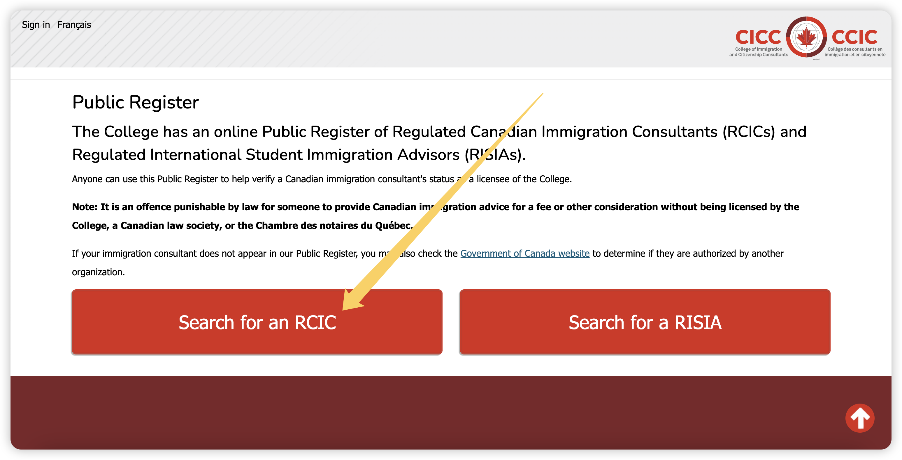
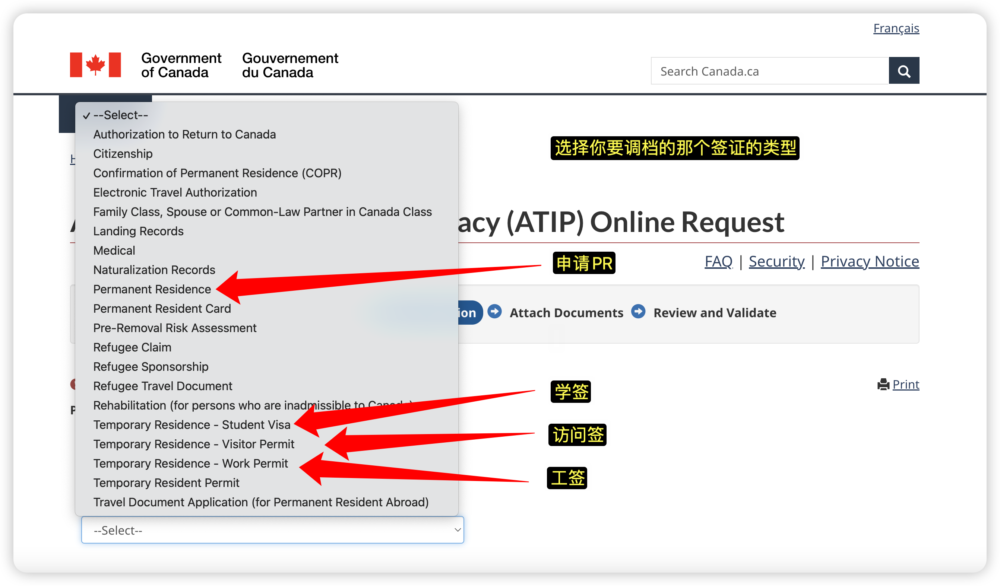
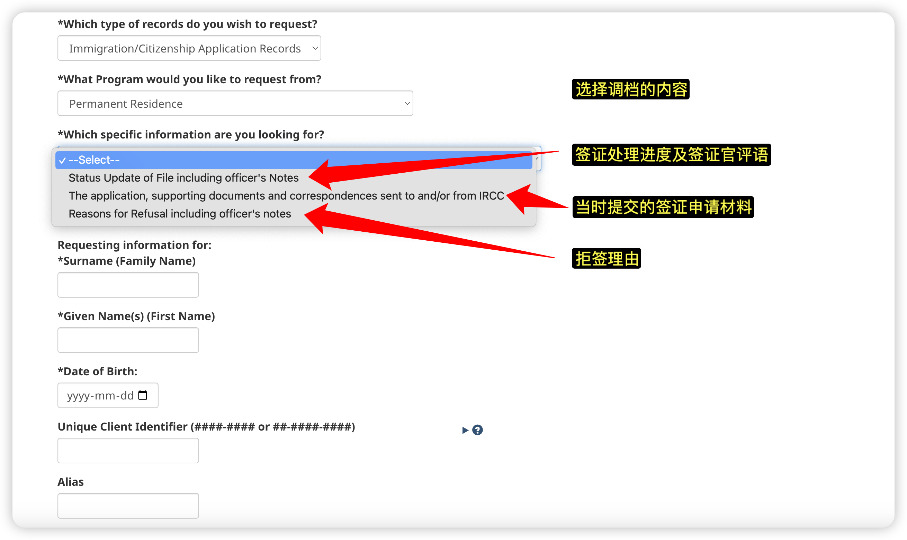
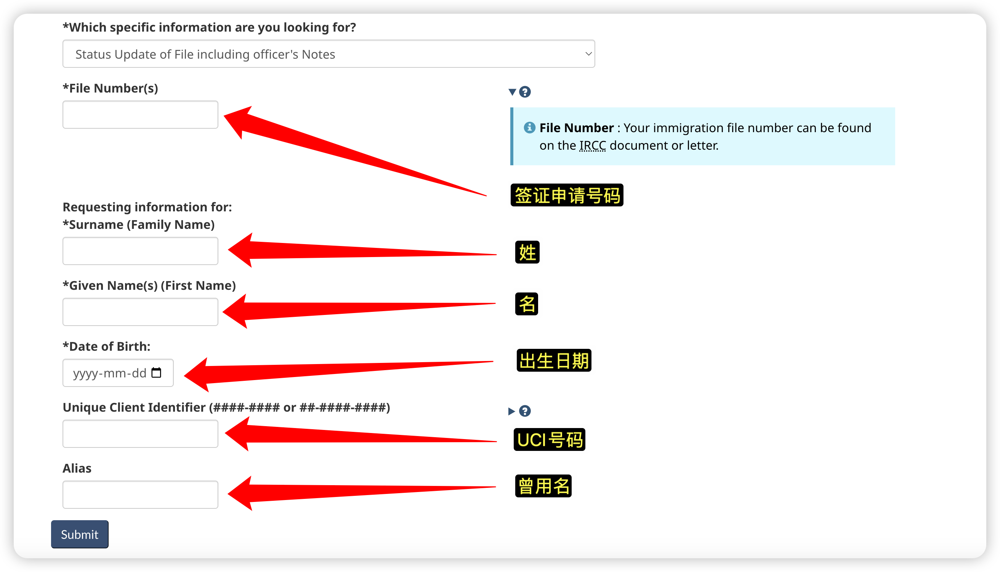
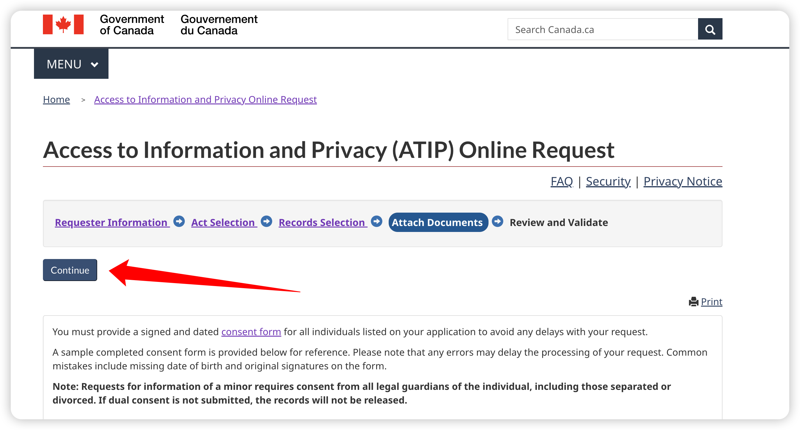

手把手教程：IRCC调档｜查询签证官拒签的正式理由#
打开ATIP的官网，点击
IRCC
重要
IRCC调档的入口与CBSA、CSIS不同，请注意区分。CBSA、CSIS的调档均是从ATIP首页的「ATIP Online Request Service」入口进入，而IRCC的入口直接列在ATIP的首页上（如上图所示）。ATIP首页网址：https://atip-aiprp.apps.gc.ca/atip/welcome.do
勾选后点击
Continue

继续勾选后点击
Continue

点击
Application/Personal Information
根据自己的情况填写对应的内容
在「Act Selection」页面需要选择调档的法律依据，有两个选择：
Privacy Act和Access to Information Act。不管根据哪条法律，调档的结果和时间都是一样的。但有趣的是，如果是基于前一条法律，调档是免费的；如果是基于后一条法律，调档需要$5 CAD。所以我们当然选择基于Privacy Act了。有人认为是不是选择付费版调档会快一些或者内容多一些，事实证明，是想多了，所以请省下这5刀。
调档内容选择
Immigration/Citizenship Application Records
根据自身情况填写表格


重要
在「Which specific information are you looking for」的选项中，如果你是要查询签证进度及签证官评语GCMS（Global Case Management System notes），则选择第一项「Status Update of File including officer’s Notes」；如果是要获取你提交的申请材料，则选择第二项「The application, supporting documents and correspondences sent to and/or from IRCC」；如果是要了解详细的拒签原因，则选择第三项「Reasons for Refusal including officer’s notes」。

模版
调档描述（Request description）模版：
Dear Officer, I am writing to request detailed information regarding the refusal of my visa application. Specifically, I would like to obtain the reasons for the refusal decision, and the visa officer’s notes or comments explaining the decision. This information will be valuable in understanding the basis for the decision and will help guide any potential future applications. Please inform me if any additional information is needed to complete this request.
在「Attach documents」页面，上传护照、授权书等资料。
如果为自己调档且签证申请里只有自己一人，则无需授权书；
如果为他人调档，需要对方的授权书；
如果为自己调档但签证申请里还有他人，需要对方的护照及授权书；
参见
IRCC版授权书下载地址
https://www.canada.ca/content/dam/ircc/migration/ircc/english/pdf/kits/forms/imm5744e.pdf
注：IRCC、CBSA、CSIS的授权书表格各不相同，注意需要到各自的官网下载。

在「Review and Validate」页面检查刚刚填写的内容，确认无误后勾选并点击
Continue

提交成功后会显示
Tracking Number，并会收到邮件。
ATIP完成IRCC调档会将结果发送到你的邮箱。一般需要1-2个月。如果超过2个月还没有结果，可以视为调档失败，重新再来一次即可。
调档 - 加拿大移民局
从IRCC调档获取GCMS，了解签证处理进度、安调与否、签证官写的备注等信息。点击查看
调档 - 加拿大边境局
从CBSA调档获取GCMS，了解签证处理进度、安调与否、签证官写的备注等信息。点击查看
调档 - 加拿大安全局
从CSIS调档确定安调（Security Screening）的状态：是否进入安调、是否安调已完成。点击查看
调档 - 申请材料取回
从IRCC调档获取此前提交的签证材料，以确保与当前申请提交的材料没有内容出入。点击查看
调档 - 拒签原因
从IRCC调档获取拒签原因及签证官评语，以便进行针对性的改进，增加二签成功率。点击查看